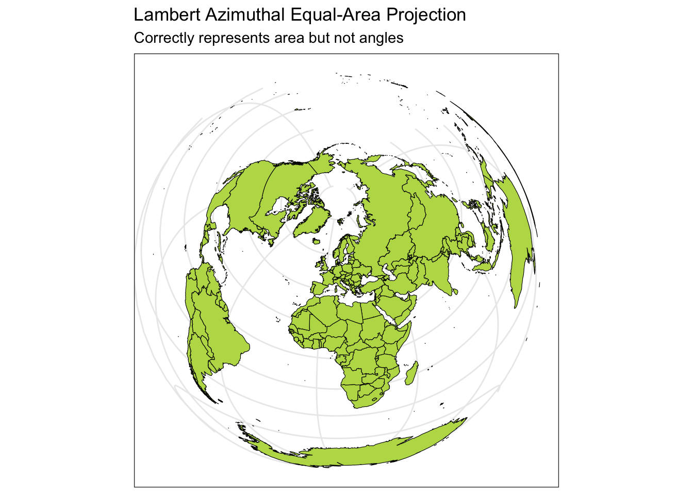
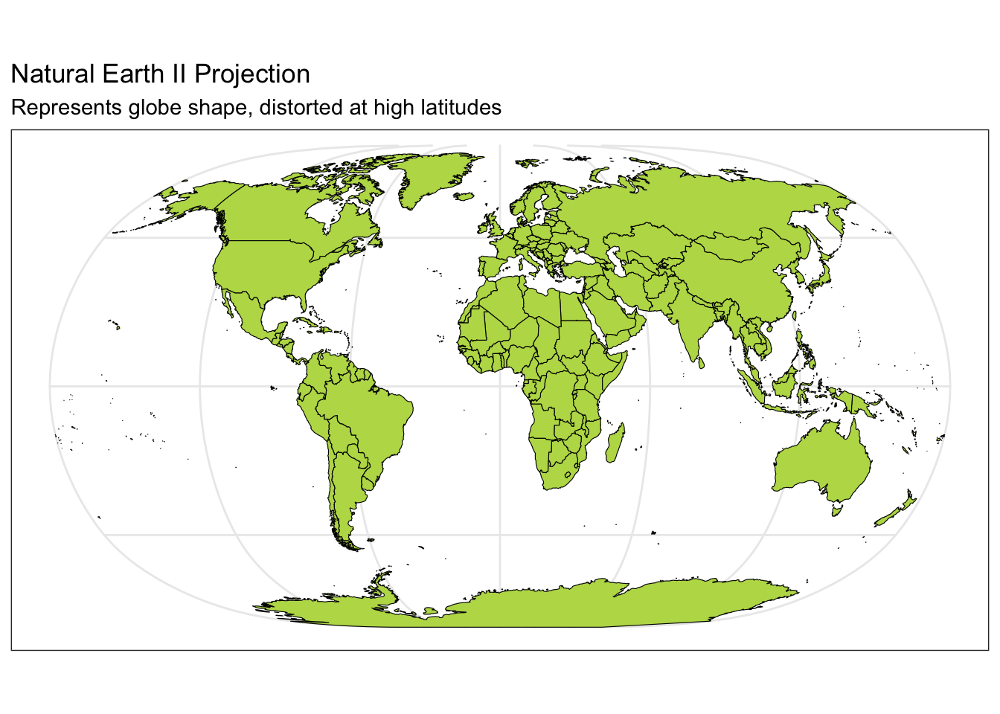

library(tidyverse)
library(sf) # tools for working with spatial vector data (GIS functionality, mapping)
library(elevatr) # access to raster elevation maps
library(terra)
library(stars)
library(tidycensus) # spatial data for the US with census information
library(USAboundaries) # access to boundaries for US states, counties, zip codes, and congressional districts Advanced spatial visualization
Learning goals
After this lesson, you should be able to:
- Understand the basics of a CRS (coordinate reference system)
- Understand and recognize different spatial file types and data types in R
- Implement some of the basic plotting with the
sfpackage - Understand foundational ideas in working with spatial data (aggregating spatial point data to a spatial region, joining spatial data sets)
Additional resources
- Spatial Data Science https://r-spatial.org/book/
- Spatial Data Science with R and
terra: https://rspatial.org/ - Leaflet in R https://rstudio.github.io/leaflet/
- CRAN task view on spatial analysis: https://cran.r-project.org/web/views/Spatial.html
Setup
You can download a template Quarto file to start from here. Create the following directory structure for this activity:
04_adv_mapscode04-adv-maps.qmd
data- We will be saving data here during this activity.
figures- We will be saving created maps here during this activity.
First load required packages.
Coordinate Reference System
At the heart of every spatial visualization is a set of locations. One way to describe a location is in terms of coordinates and a coordinate reference system (CRS).
There are three main components to a CRS: ellipsoid, datum, and a projection. (The projection is a part of projected CRSs.)
Ellipsoid
- The Earth is not a sphere.
- It’s closer to a bumpy ellipsoid with a bulge at the equator.
- The ellipsoid part of a CRS is a mathematical model giving a smooth approximation to Earth’s shape.
- Common ellipsoid models: WGS84 and GRS80

Datum
- Where do we center the ellipsoid? This center is called a datum.
- For a given ellipsoid model, different datums are used to better fit different areas of the world.
- e.g., For the GRS80 ellipsoid, the NAD83 datum is a good fit in North America, but SIRGAS2000 is a better fit in South America.
- The Global Positioning System (GPS) uses the WGS84 ellipsoid model and WGS84 datum. This provides an overall best fit of the Earth.

Why do the ellipsoid and datum matter?
If you have longitude and latitude coordinates for a location, you need to know what datum and ellipsoid were used to define those positions in order to overlay those points correctly on a map.
Note: In practice, the horizontal distance between WGS84 and NAD83 coordinates is about 3-4 feet in the US, which may not be significant for most applications.
Projection
Lastly, the Earth lives in a 3 dimensional (3D) world and most visualizations are on a 2 dimensional (2D) surface. We must choose a projection method to represent points, regions, and lines on Earth on a 2D map with distance units (typically meter, international foot, US survey foot). In that projection process, a 3D element will lose angle, area, and/or distance when projected onto a 2D surface, no matter which method is chosen.
- For a good overview of common projection methods, see https://pubs.usgs.gov/gip/70047422/report.pdf.
- Common projection: Mercator projection
- Cylindrical map projection from the 1500’s
- Useful for navigation because it represented north as up and south as down everywhere and preserves local directions and shape
- Drawback: it inflates the size of regions far from the equator. Greenland, Antarctica, Canada, and Russia appear much bigger than they should. The illustration below compares country areas/shapes under the Mercator projection (light blue) with true areas/shapes (dark blue).

Below you can see four different world projections. Take note of what is lost in terms of angle, area, or distance in these projections.
world <- rnaturalearth::ne_countries(scale = "medium", returnclass = "sf")
# Basic Map w/ labels
ggplot(data = world) +
geom_sf(color = "black", fill = "#bada55") +
labs(x = "Longitude", y = "Latitude", title = "World Map - Mercator Projection", subtitle = paste0("(", length(unique(world$name)), " countries)")) +
theme_bw() 
ggplot(data = world) +
geom_sf(color = "black", fill = "#bada55") +
coord_sf(crs = "+proj=laea +lat_0=52 +lon_0=10 +x_0=4321000 +y_0=3210000 +ellps=GRS80 +units=m +no_defs") +
labs(title = "Lambert Azimuthal Equal-Area Projection", subtitle = "Correctly represents area but not angles") +
theme_bw()
ggplot(data = world) +
geom_sf(color = "black", fill = "#bada55") +
coord_sf(crs = "+proj=fouc") +
labs(title = "Foucaut Projection", subtitle = "Correctly represents area, lots of shape distortion in high latitudes") +
theme_bw() ggplot(data = world) +
geom_sf(color = "black", fill = "#bada55") +
coord_sf(crs = "+proj=natearth2") +
labs(title = "Natural Earth II Projection", subtitle = "Represents globe shape, distorted at high latitudes") +
theme_bw()
Spatial data
With a CRS to collect and record location data in terms of longitude or easting (x) and latitude or northing (y) coordinates, we can now consider common models for storing spatial data on the computer. There are two main data models: vector and raster.
Vector
Vector data represents the world as a set of spatial geometries that are defined in terms of location coordinates (with a specified CRS) with non-spatial attributes or properties.
The three basic vector geometries are:
- Points: Locations defined based on a (x, y) coordinates.
- e.g., Cities
- Lines: A set of ordered points connected by straight lines.
- e.g., Roads, rivers
- Polygons: A set of ordered points connected by straight lines, first and last point are the same.
- e.g., Geopolitical boundaries, bodies of water
File formats:
- Text files (e.g.,
.csv)- x and y columns: for coordinates (x for longitude and y for latitude)
- group id column: needed for lines and polygons
- additional columns: attributes related to the areas in each row (e.g., population sizes, demographic information)
- Text files do not store the CRS.
- Shapefiles (
.shp)- Widely supported spatial vector file format (that includes the CRS).
- GeoJSON (
.geojson) (Geographical Javascript Object Notation) - KML (
.kml) (Keyhole Markup Language)
Raster

- Continuous grid of cells where each cell has a single value.
- Continuous values (e.g., elevation, precipitation)
- Categorical values (e.g., land cover type, soil type)
- Shape of cells
- Generally square (like pixels)
- Cells can be rotated and sheared. Rectilinear and curvilinear shapes are also possible, depending on the spatial region of interest and CRS.

Computational time considerations
High resolution raster data involves a large number of small cells. This results in large file sizes and objects which can make computation and visualization quite slow.
File formats:
- GeoTIFF (
.tifor.tiff)- Most popular
- NetCDF (
.nc) - HDF (
.hdf)
To work with raster data in R, you’ll use the raster, terra, and the stars packages. If you are interested in learning more, check out https://r-spatial.github.io/stars/.
Reading in spatial data
Navigate to the following URLs to download the spatial data files we’ll be using in this activity. Put these files in the data folder of your 04_adv_maps folder.
- MN cities: https://gisdata.mn.gov/dataset/loc-pop-centers
- File type: shapefile (
.shp) - File name:
shp_loc_pop_centers.zip(Unzip this after downloading.)
- File type: shapefile (
- MN water: https://gisdata.mn.gov/dataset/us-mn-state-metc-water-lakes-rivers
- File type: shapefile (
.shp) - File name:
shp_water_lakes_rivers.zip(Unzip this after downloading.)
- File type: shapefile (
Exercise: Read in the MN cities and MN water shapefiles by entering the correct relative paths in st_read(). Tab completion will be very helpful here: type part of a directory or file name and hit tab to autocomplete or bring up a dropdown of options.
# The sf package comes with a North Carolina shapefile:
nc <- st_read(system.file("shape/nc.shp", package = "sf"))
# Read in shapefiles just downloaded
mn_cities <- st_read("Add correct relative path to city_and_township_population_centers.shp")
mn_water <- st_read("Add correct relative path to LakesAndRivers.shp")Solution
mn_cities <- st_read("../data/shp_loc_pop_centers/city_and_township_population_centers.shp")
mn_water <- st_read("../data/shp_water_lakes_rivers/LakesAndRivers.shp")The sf package reads in spatial data in data.frame-like format. Using the class() function we can check the class (type) of object that we just read in. Note the presence of the “sf” and “data.frame” classes:
class(nc)
class(mn_cities)
class(mn_water)Initial maps, exploring CRS impact
When we read in spatial objects, it is useful to check what CRS underlies the data. We can do that with st_crs() from the sf package:
st_crs(nc)We can treat sf objects similarly to ordinary datasets when using ggplot2 to make spatial visualizations:
ggplot(nc) +
geom_sf() +
theme_classic() +
labs(title = "NAD27")Let’s explore how changing the CRS changes the map. The st_transform() function in sf re-expresses a spatial object using a user-supplied CRS. The crs argument takes a string descriptor of the CRS. We can find these descriptors via https://epsg.io. In the example below, I searched for “South Carolina”.
nc_transformed <- nc %>% st_transform(crs = "EPSG:32133")
st_crs(nc_transformed)
ggplot(nc_transformed) +
geom_sf() +
theme_classic()Exercise: The goal is to use https://epsg.io to find two CRSs that result in a North Carolina map that is noticeably different from the original in the NAD27 CRS.
Take a look at the function below that re-maps a spatial object using a new CRS.
- Read through the function to get a sense for how this code works.
spatial_objandnew_crsare called arguments (function inputs).- Add one more argument called
titleto this function. Use this input to set the plot title.
- Add one more argument called
- Use your function to make two new maps using your chosen CRSs.
transform_and_plot <- function(spatial_obj, new_crs) {
spatial_obj %>%
st_transform(crs = new_crs) %>%
ggplot() +
geom_sf() +
theme_classic()
}
# Example usage of this function (using a South Carolina CRS)
transform_and_plot(nc, new_crs = "EPSG:32133")Verify your understanding: If you had point location data that was not in the NAD27 CRS, what would you expect about the accuracy of how they would be overlaid on the original North Carolina map?
Solution
transform_and_plot <- function(spatial_obj, new_crs, title) {
spatial_obj %>%
st_transform(crs = new_crs) %>%
ggplot() +
geom_sf() +
labs(title = title) +
theme_classic()
}
ggplot(nc) +
geom_sf() +
theme_classic() +
labs(title = "NAD27 (Original)")
transform_and_plot(nc, new_crs = "EPSG:32133", title = "South Carolina")
transform_and_plot(nc, new_crs = "EPSG:6439", title = "Florida")
transform_and_plot(nc, new_crs = "EPSG:3112", title = "Australia (GDA94)")
transform_and_plot(nc, new_crs = "EPSG:20353", title = "Australia (Queensland, South, West)")
transform_and_plot(nc, new_crs = "EPSG:5940", title = "Russia")Extended example: MN map with multiple layers
Goal: create a map of MN with different layers of information (city point locations, county polygon boundaries, rivers as lines and polygons, and a raster elevation map).
Get county boundaries
We’ve already read in city location and water information from external shapefiles. We can access county boundaries with the us_counties() function in the USAboundaries package.
# Load country boundaries data as sf object
mn_counties <- USAboundaries::us_counties(resolution = "high", states = "Minnesota")
# Take care of duplicate column names (there are two identical "state_name" columns)
names_counties <- names(mn_counties)
names(mn_counties)[names_counties == "state_name"] <- c("state_name1", "state_name2")Unifying CRSs across different spatial datasets
We first need to ensure that the CRS is the same for all spatial datasets.
Exercise:
- Check the CRS for the
mn_cities,mn_water, andmn_countiesdatasets. - If the datasets don’t all have the same CRS, use
st_transform()to update the datasets to have the same CRS asmn_cities. You can usecrs = st_crs(mn_cities)withinst_transform().
Solution
# Check CRSs
st_crs(mn_cities)
st_crs(mn_water)
st_crs(mn_counties) # mn_counties is different!
# Transform the CRS of county data to the more local CRS of the cities
mn_counties <- mn_counties %>%
st_transform(crs = st_crs(mn_cities))
# Check the new CRS for mn_counties
st_crs(mn_counties)Initial map: counties and cities
Exercise: Create a map where city locations are overlaid on a map of county boundaries.
- You will need to call
geom_sf()twice. - Make the map background white.
- Install the
ggthemespackage, and add the following layer to use a clean map theme:+ ggthemes::theme_map()
Solution
# Option 1
ggplot() + # plot frame
geom_sf(data = mn_counties, fill = "white") + # county boundary layer
geom_sf(data = mn_cities, size = 0.5) + # city point layer
ggthemes::theme_map()
# Option 2
ggplot(mn_counties) + # plot frame
geom_sf(fill = "white") + # county boundary layer
geom_sf(data = mn_cities, size = 0.5) + # city point layer
ggthemes::theme_map()We can use traditional ggplot2 aesthetics (e.g., fill, color) to display location specific attributes. Below we only plot large cities, and we color and size cities according to their population.
ggplot() +
geom_sf(data = mn_counties, fill = "white") +
geom_sf(data = mn_cities %>% filter(Population >= 10000), mapping = aes(color = Population, size = Population)) + # cities layer
scale_color_viridis_c() + # continuous (gradient) color scale
labs(title = "Minnesota Cities with Population >= 10,000") +
ggthemes::theme_map() +
theme(legend.position = "bottom") # move legendExercise: Look up the scale_color_viridis_c() documentation via the ggplot2 reference.
- Read the function description at the top. What is the advantage of using this function for making color palettes?
- Look through the examples section. What is the difference between the
_d(),_c(), and_b()variants of this function?
Solution
The viridis color scale results in plots that can be interpreted analogously whether in color or black and white and is color-blind friendly.
- The
_d()variant is used when color is mapped to a discrete (categorical) variable. - The
_c()variant is used when color is mapped to a continuous variable. - The
_b()variant is used when color is mapped to a continuous variable but when we want that continuous variable to be binned so that there is a small set of colors.
Adding elevation data
Where are large cities located? Is there some relationship to local geography/terrain? To investigate these questions, we can obtain elevation data to include on the map using the elevatr package. We encounter two new functions here—we can look up their documentation to make sense of the code by entering the following in the Console:
?elevatr::get_elev_raster?terra::as.data.frame
elevation <- elevatr::get_elev_raster(mn_counties, z = 5, clip = "bbox")
raster::crs(elevation) <- sf::st_crs(mn_counties)
# Convert to data frame for plotting
elev_df <- elevation %>% terra::as.data.frame(xy = TRUE)
colnames(elev_df) <- c("x", "y", "elevation")Exercise: Build on our existing map by adding a raster layer for elevation as the background.
- Look up the documentation for
geom_raster()to plot the elevation data fromelev_df. This will be the first layer of the plot. - Look at the documentation for
scale_fill_gradient()to add the following elevation color scale:"darkgreen"represents the lowest elevations, and"white"represents the highest elevations. - Add in the layers from the map above to show the largest cities and the county outlines. To remove a background color, use
fill = NA.
Solution
ggplot() +
geom_raster(data = elev_df, aes(x = x, y = y, fill = elevation)) + # adding the elevation as first (bottom) layer
scale_fill_gradient(low = "darkgreen", high = "white", guide = FALSE) +
geom_sf(data = mn_counties, fill = NA, color = "black") +
geom_sf(data = mn_cities %>% filter(Population >= 10000), mapping = aes(color = Population, size = Population))+ # cities layer
scale_color_viridis_c() + # continuous (gradient) color scale
labs(title = "Minnesota Cities with Population >= 10,000") +
ggthemes::theme_map() +
theme(legend.position = "bottom") # move legendZoom in to Twin Cities and add water
The bulk of the interesting information in this map is in the Twin Cities area. Let’s zoom in to this area.
- We can use the
st_bbox()function to get the bounding box for a spatial object—we do this after filtering to the 7 counties in the Twin Cities. - We then use
st_crop()to trim a spatial object to a given bounding box.
seven_countyarea <- mn_counties %>%
filter(name %in% c("Anoka", "Hennepin", "Ramsey", "Dakota", "Carver", "Washington", "Scott")) %>%
st_bbox()
seven_countyarea
elevation <- elevatr::get_elev_raster(mn_counties %>% st_crop(seven_countyarea), z = 9, clip = "bbox")
raster::crs(elevation) <- sf::st_crs(mn_counties)
# Convert to data frame for plotting
elev_df <- elevation %>% terra::as.data.frame(xy = TRUE)
colnames(elev_df) <- c("x", "y", "elevation")In the plot below, we add a layer for water information and a coord_sf() layer to restrict the x and y-axis limits to the Twin Cities bounding box. (Without this layer, the map would zoom back out to show all counties and bodies of water).
ggplot() +
geom_raster(data = elev_df, aes(x = x, y = y, fill = elevation)) +
geom_sf(data = mn_counties, fill = NA, color = "black") + # county boundary layer
geom_sf(data = mn_water, fill = "lightsteelblue1", color = "lightsteelblue1") + # NEW: river/lake layer
geom_sf(data = mn_cities %>% filter(Population >= 10000), mapping = aes(color = Population, size = Population)) + # cities layer
scale_color_viridis_c(option = "magma") + # continuous (gradient) color scale
scale_fill_gradient(low = "darkgreen", high = "white") + # continuous (gradient) fill scale
coord_sf(xlim = seven_countyarea[c("xmin", "xmax")], ylim = seven_countyarea[c("ymin", "ymax")]) + # NEW: crop map to Twin Cities bounding box
labs(title = "Twin Cities with Population >= 10,000") +
ggthemes::theme_map() +
theme(legend.position = "none") # remove legendExercise: Let’s add to the above code chunk to save the map above to an image file called tc_map_zoom.png in the results folder. The code example below shows a general template for saving a plot to file. Choose a reasonable width and height. (There are also jpeg() and pdf() functions for writing images.)
png("relative path to image", width = width_in_pixels, height = height_in_pixels)
# Code for creating plot
dev.off()Twin Cities map with leaflet
Below we show how to make the MN counties map in the leaflet package.
library(leaflet)
mn_counties_leaf <- mn_counties %>% st_transform(4326) # Leaflet expects this CRS for vectors
mn_cities_leaf <- mn_cities %>% st_transform(4326)
cities_per_county <- st_join(mn_cities_leaf, mn_counties_leaf) %>%
st_drop_geometry() %>% # removes geometry - makes the following calculation more efficient
count(name)
mn_counties_leaf %>%
filter(name %in% c("Anoka", "Hennepin", "Ramsey", "Dakota", "Carver", "Washington", "Scott")) %>%
left_join(cities_per_county) %>%
leaflet() %>%
addProviderTiles("CartoDB.Positron") %>%
addPolygons(
color = "#444444", weight = 1, smoothFactor = 0.5, opacity = 1.0,
fillOpacity = 0.5, fillColor = ~colorQuantile("YlOrRd", n)(n),
highlightOptions = highlightOptions(color = "white", weight = 2, bringToFront = TRUE)) %>%
addCircles(data = mn_cities_leaf %>% filter(County %in% paste(c("Anoka", "Hennepin", "Ramsey", "Dakota", "Carver", "Washington", "Scott"), "County")), color = "#444444")Challenge 1
Navigate to Advanced map visualization - Challenge 1 on GitHub to clone the repository for this challenge. Challenge 1 involves using the tools we learned today to spatially explore different aspects of the Twin Cities and is part of Homework 2.
Reflect
In your personal course journal, write a few observations from today about any of the following:
- What was challenging and why? What specific strategy do you want to try to improve your understanding?
- What strategies, associations, insights helped things click today?
Remember that the point of this journal is for you to have some record of what was going on in your learning at this point so that in a couple weeks, you can reflect meaningfully on your progress.
Announcements
- Skills Session 1 (keyboard shortcuts) should be completed with me next week. Look at the bottom of the Skills Session 1 page for when you can find me in my office to complete this.
- Start thinking concretely about your course project topic. Project Milestone 1 is coming up in 2 weeks (2/12).
- Start looking for datasets to see what might be feasible. Think about who you would like to work with.
- If you are looking for project partners, there will be time on Thursday to connect with partners.
- Work on Homework 2 due Monday 2/5.
Day 2
We’ll work on Homework 2 today. (ggplot Challenge 2 and Maps Challenge 1).
Finding project partners: If you are looking to connect with project partners with similar interests, use this Google Jamboard to record your ideas and see who is interested in similar areas.